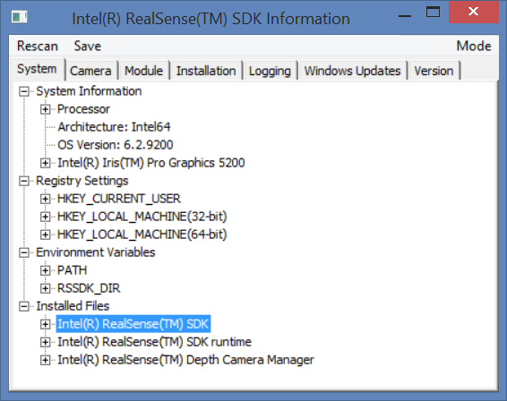
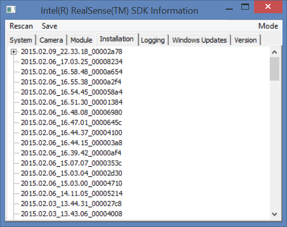
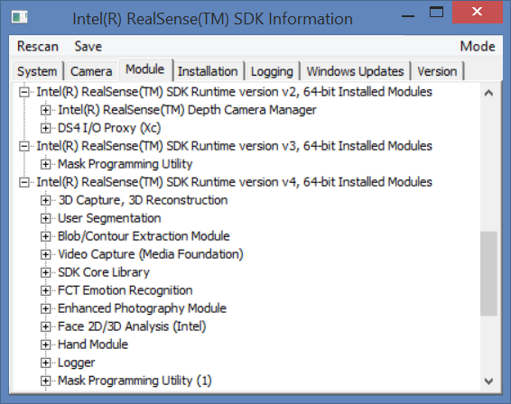
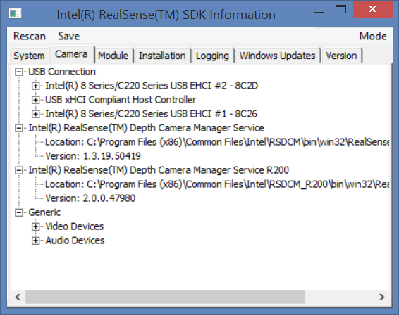
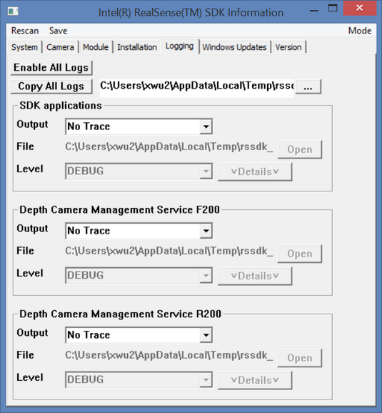
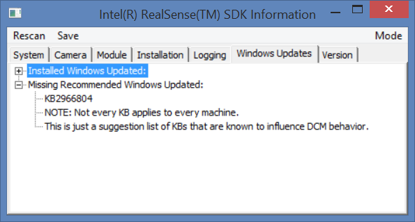
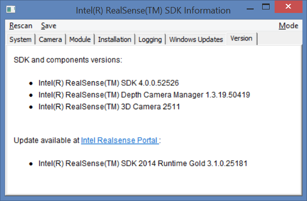

The sdk_info tool displays the SDK setup information for trouble shooting purposes. You can review the SDK setup information on the local machine or save the information for remote diagnosis. The sdk_info tool organizes the setup information into multiple tabs as follows:
The System Tab
 System Information |
The System tab displays the system related information: OS, processor, graphic driver, registry settings, and environment variables etc. Click on any line that has a plus icon in front to expand the line into more details. For example, expanding the PATH environment variable will show the value of the PATH environment variable. Similarly, click on any line that has a minus icon in front to close the details. Click the Mode menu to select between the Basic mode or the Advanced mode. The Advanced mode lists a bit more debugging information: for example, the list of all installed files. Click the Save menu to save the information to a text file for remote diagnosis. The saved file includes information from all tabs. |
The Installation Tab
The Installation tab shows the SDK installer logs. Multiple installer logs are named and ordered after their creation date and time. For example, the log 2015.02.09_22.33.18_00002a78 is an SDK installation at 10:33 pm on Sep 2nd, 2015. By default, the sdk_info tool shows the details of the most recent installation log. You can load and unload any installer log by right clicking on the line (which pops up a context menu) and then choose Load/Unload in the context menu. |
 Installation Information |
The Module Tab
 Module Information |
The Module tab shows the details of installed SDK runtime libraries. Click on each line to review the details of each module installation. Click on the Mode menu to select between the Basic mode and Advanced mode. The Basic mode lists all installed module names, while the Advanced mode additionally shows the module descriptor details. |
The Camera Tab
The Camera tab shows the following information about any cameras on the system:
Click the Rescan menu to rescan the USB bus if a device is newly plugged into the system. |
 Camera Information |
The Logging Tab
 Logging Control |
The Logging tab configures the SDK logging and tracing feature. You must run the sdk_info tool with the administrator privilege to show this tab. Complete the following steps to enable the SDK logging feature:
|
The Windows Update Tab
The Windows Update tab lists the installed windows updates on the system as well as suggested ones. |
 Windows Updates Information |
The Version Tab
 Version Information |
The Version tab lists the SDK installed components and their versions. The tab also shows any available updates and the corresponding URLs. You can click on the URLs to get the updates. |